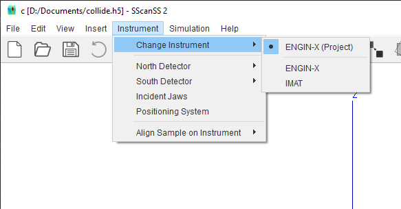
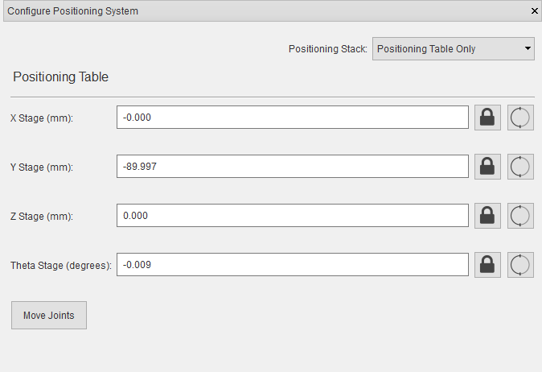
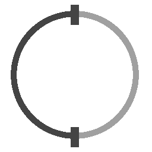
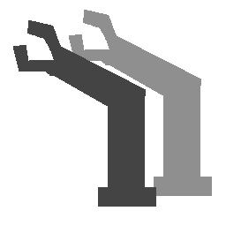
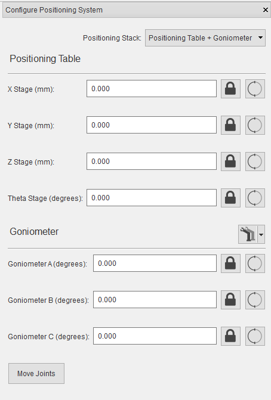
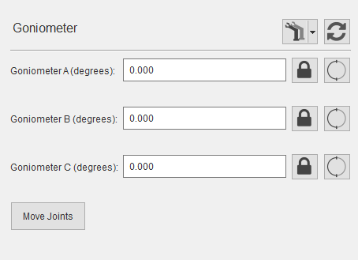
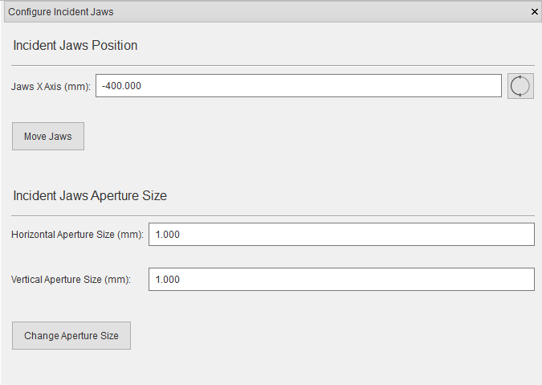

Instrument Configuration¶
Instruments are defined using Instrument Description Files depending on the instrument certain options might be available or unavailable. For example, you will not be able to change the position of a detector from the settings, if the instrument is defined with fixed detector.
Switching instrument¶
After a new project is created for a specific instrument, it is possible to switch instruments, for example, to measure the same sample and points at another instrument. To change the project instrument, select Instrument > Change Instrument on the main menu and click the desired instrument from the submenu.
The instrument change cannot be undone so it is advisable to save the changes to the project before performing the action, the software will warn the user if the project has unsaved changes. The sample, fiducial points, measurement points and vectors will be preserved after the instrument change but all instrument specific settings such as the selected collimator will be lost even if the new instrument uses a similar naming convention. When switching to an instrument with smaller number of detectors than the active instrument, the extra measurement vectors will be added as alignments.
When a project is saved, the instrument is also written into the save file, if the version of the instrument in the project file differs from the version in the software, it is possible to switch from project version of the instrument to the software version.
{kind=link}
Positioning system settings¶
Instruments typically have multiple positioning systems to support different positioning or accuracy demands. To manage the positioning system settings, click Instrument > Positioning System in the main menu.
{kind=link}
To change the positioning system, select a positioning system from the positioning stack drop-down.
To change the positioning system’s position and/or orientation, type in the new joint variables and click the Move Joints button.
Tip
You can lock individual joints by clicking button and ignore joint limits by clicking  button.
{kind=link}
{kind=link}
The positioning system can either be a single positioner such as a positioning table or a stack of positioners such a positioning table with a goniometer. When the positioning system is a stack, the first positioner is considered fixed and other positioners are movable i.e. the base matrix of the positioners can be changed so as to adjust the position and/or orientation of the positioner on the preceding one.
Change base matrix¶
Movable positioners will show the  button next to the name of the positioner, click on the button to import a base matrix from a Transformation matrix file (.trans).
{kind=link}
{kind=link}
The button is also a menu button, the menu can be accessed by clicking the down arrow beside the button. The menu contains the following options:
Import Base Matrix which is the default action of the button.
Calculate Base Matrix from fiducial points measured at 3 or more varied poses (see Compute the Base Matrix of a Positioner.).
Export Base Matrix to file which could be useful if you intend to change the sample without moving the positioner then you can export and reuse the base matrix in other projects.
If the base matrix has been changed, the button will be displayed. Clicking on the button will reset the base matrix to the default for that positioner.
{kind=link}
{kind=link}
Detector settings¶
To change the detector collimator, click Instrument > (Detector Name) and select desired collimator.
If the detector is movable, the joint offset can be changed by clicking Instrument > (Detector Name) > Other settings.
Incident Jaws settings¶
To manage incident jaws settings, Click Instrument > Incident Jaws from the menu.
{kind=link}
To change the incident jaws aperture, type in the horizontal and vertical aperture values, and click the Change Aperture Size button.
If the jaws are movable, the jaws positioner settings will be available similar to Positioning system settings . To change the position, type in the new joint variables, and click the Move Jaws button.